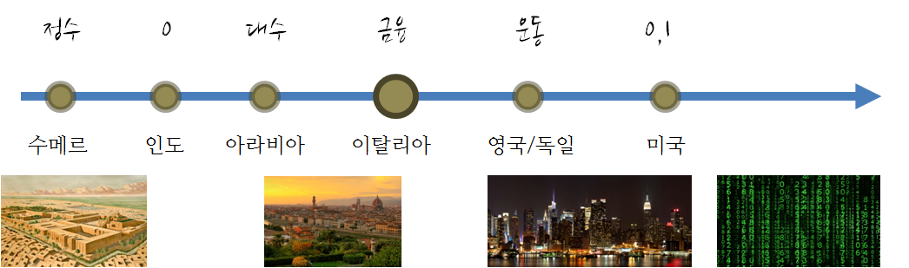

1 Introduction
한국인이 선정한 정확히는 EBS에서 선정한 \(\pi, \infty, x, 0, i\) 숫자를 통해 수학의 역사를 살펴본다.
수학은 양, 구조, 공간, 변화 등 개념을 다루는 학문이다.1 사회가 복잡해지고 더 많은 것을 간편하게 해결하고자 하는 인간의 욕구는 부의 저장, 상업거래를 넘어 과학과 기술분야에 혁신적인 수학을 개발했으며, 0과 1 두가지 숫자로 이제는 그 어떤 인간도 경험해보지 못한 미지의 세계에 대한 여정을 계속하고 있다. 결국, 수학의 발전은 사회의 요구에 따라 발전을 함께 했고, 앞으로도 그럴 것이다.

1.1 수학의 역사23
- 수 의 발전은 그 당시 가장 복잡한 사회인 수메르 문명의 복잡한 문제 중의 하나인 부의 저장과 관련이 있다.
- 인도에서 0 이 발견되고 이것이 아라비아로 전달되어 상업에 많이 사용되고 있었으나, 아라비아는 그 당시 유산과 관련된 엄청나게 복잡한 문제가 있었고, 이를 해결하기 위한 기법으로 대수(Algebra) 를 발명하여 사회문제를 효과적으로 해결했다.
- 이탈리아는 그 당시 가장 발전한 아라비아와 빈번하게 무역거래를 했으며, 오늘날 피보나치 로 알려진 가문에 속한 사람이 북아프리카에서 유년시절 아랍상인과 상업거래를 하면서 배운 놀라운 수학을 한편의 책으로 정리하여 힌두-아라빅(Hindu-Arabic) 수학을 아탈리아에 소개하면서, 일약 이탈리아는 금융의 중심지가 되었고, 이것이 밑걸음이 되어서 복식부기 등 혁신적인 금융기법이 많이 발전했다.
- 르네상스 이후로 신 중심 가치관에서 벗어나 인간 중심으로 세상을 이해하고자 하는 노력이 많이 일어 났고, 또한, 기존의 정적인 세상이 아닌 동적인 사물이나 세상을 수학적으로 표현하고자 하는 움직임이 있었고, 과학과 기술에 대한 믿음도 함께 했다. 움직임에 대한 수학이 미적분학(Calculus) 으로 영국의 뉴튼 혹은 독일의 라이프니치가 먼저 했는지 중요하지만, 두 사람이 비슷한 생각을 거의 같은 시기에 했던 것만은 분명해 보이고, 라이프니치의 수학적 표현이 더 좋기 때문에 현재 미적분 표기법은 라이프니치를 따른다.
- 과거와 현재, 그리고 운동에 대한 것을 수학으로 다룰 수 있기 때문에 이제 남은 것은 미래에 대한 것이다. 누구나 궁금한 미래를 알기 위해서 확률과 통계 가 차례로 발전하게 된다.
- 인간이 가장 약한 것 중의 하나인 계산을 0 과 1 을 통해 기계가 대신할 뿐만 아니라, 더 나아가 새논은 0 과 1 을 통해서 숫자와 문자는 물론이고, 음성, 사진, 동영상을 전송하는 것이 가능하다는 것을 보였다.
1.2 수학의 세부 분야
산술, 대수학, 기하학, 해석학 등이 수학의 세부 분야다.
1.3 세상을 바꾼 5개의 수 - ‘넘버스’(5부작)
EBS에서 세상을 바꾼 숫자 5개를 정해서 다큐멘터리를 만들었다. 세상을 바꾼 5개의 수-넘버스(5부작)로 \(\pi, \infty, x, 0, i\) 를 한국어로 나름 이해하기 쉽게 만들었다.